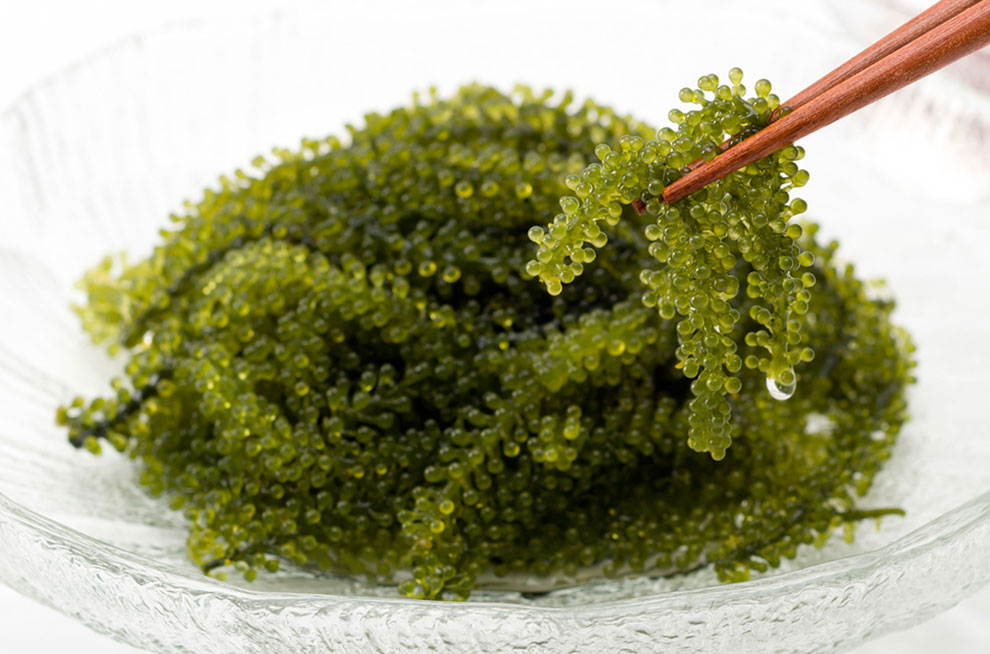

搭乘時間：2018/10/28-2019/03/30
| 航班號 | 航線 | 起飛時間 | 抵達時間 | 飛行日 |
| IT230 | 桃園－沖繩 | 06:35 | 08:55 | 每日 |
| IT232 | 桃園－沖繩 | 18:20 | 20:40 | 每日 |
| IT231 | 沖繩－桃園 | 09:45 | 10:20 | 每日 |
| IT233 | 沖繩－桃園 | 21:30 | 22:05 | 每日 |
| IT288 | 高雄－沖繩 | 17:00 | 19:40 | 每日 |
| IT289 | 沖繩－高雄 | 20:30 | 21:25 | 每日 |

巴士：
▪機場至國際通：搭乘25、120路線巴士到縣廳北口，或117高速巴士到旭橋站下車
單軌列車：
▪機場至首里站：於國際航廈步行至國內線，通過空橋至單軌列車站，至首里站約27分鐘


海洋博公園
佔地廣大的海洋博公園，以美麗海水族館最為知名，「黑潮之海」水槽完整呈現周邊海域的夢幻
美國村
前身為美軍駐日基地遺址，不僅是超人氣逛街好去處，同時也是感受美國文化融入沖繩日常的最佳選擇
首里城
想親炙琉球王國文化，首里城絕對必遊；復原琉球國王的居所，保留古代城下町的道路，深具古都風情

沖繩麵
經典鄉土料理－沖繩麵，多數以豬骨或雞骨熬製的高湯為基底，混合柴魚高湯，常佐上豬肋排或三層肉

海葡萄
號稱綠色魚子醬，是沖繩特有的珍貴食材，顆顆分明脆脆的口感，超級下飯，當下酒菜也非常適合

石垣牛
產於石垣島的頂級和牛，肉質軟嫩、油花細緻，入口即化的銷魂美味令人難忘，不吃就太對不起自己